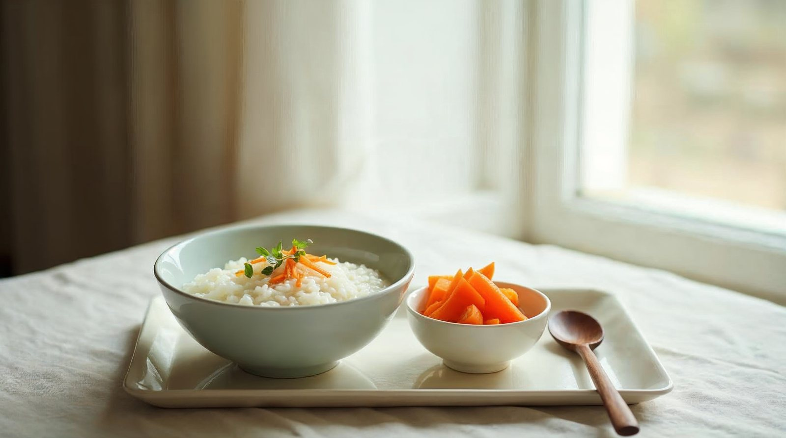
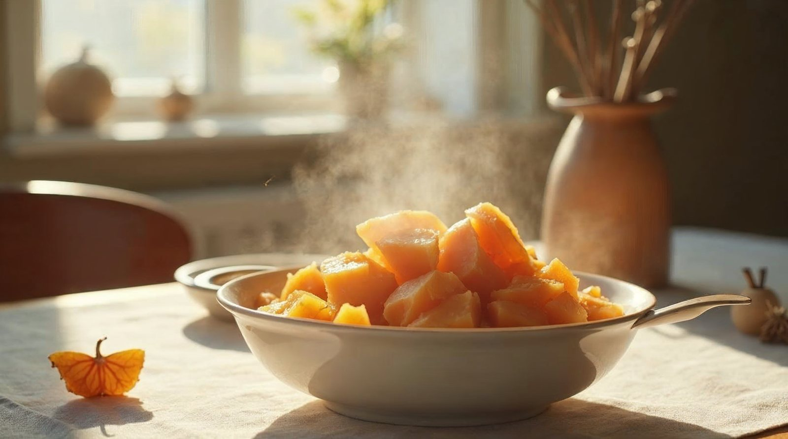
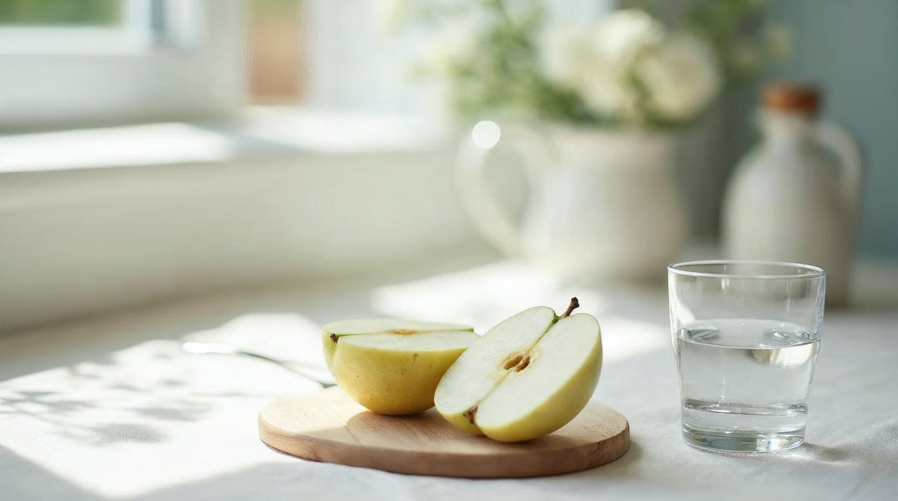
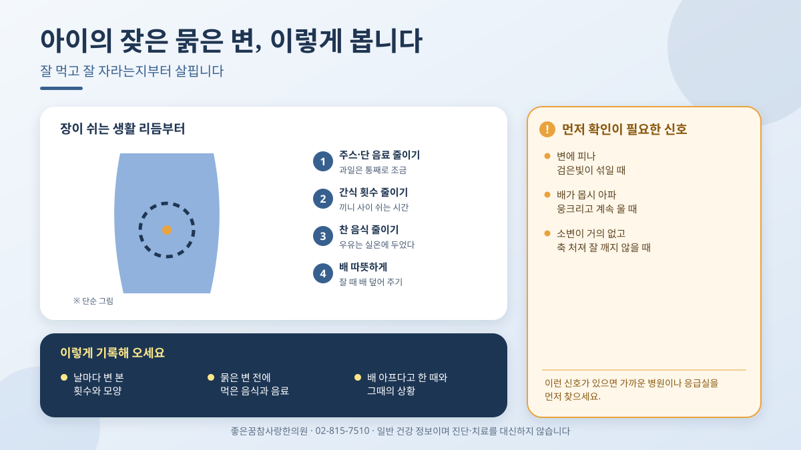

이종호 한의사 감수좋은꿈참사랑한의원 대표원장 (한의사 면허번호 19769)발행 2026-11-26 · 수정 2026-11-26
이 글의 차례
어린이집 하원 가방을 열면 갈아입힌 바지가 또 들어 있습니다. 선생님 메모에는 '오늘도 변이 묽었어요'라는 말이 적혀 있습니다. 집에 와서도 저녁을 먹자마자 화장실로 달려가는 아이를 보며, 보호자의 마음은 점점 무거워집니다. '장이 약한 걸까. 먹는 게 잘못된 걸까.'
진료실에서 아이 배 이야기를 할 때 가장 자주 듣는 말이 "변이 늘 퍼져요"입니다. 아이는 잘 놀고 크게 아파 보이지 않는데, 변 모양이 늘 묽고 횟수가 많아서 걱정이라는 이야기입니다. 장염처럼 갑자기 시작된 설사가 아니라 몇 주, 몇 달째 이어지는 경우가 많습니다.
먼저 말씀드리면 아이의 변은 어른보다 훨씬 다양합니다. 먹는 것, 노는 양, 날씨, 긴장에 따라 하루에도 모양이 바뀝니다. 그래서 한두 번의 묽은 변보다 아이의 평소 모습과 비교해 무엇이 달라졌는지를 보는 것이 중요합니다.
저는 변 이야기를 듣기 전에 아이가 잘 먹고 잘 자는지, 키와 몸무게가 잘 늘고 있는지를 먼저 여쭙니다. 아이가 잘 자라고 있다면 마음을 조금 내려놓으셔도 되고, 그렇지 않다면 더 꼼꼼히 살펴볼 이유가 생깁니다.

어느 정도면 '자주 묽다'고 볼까요?
아이의 변 횟수는 나이와 먹는 것에 따라 꽤 다릅니다. 젖이나 분유를 먹는 아기는 하루에도 여러 번 묽은 변을 보는 것이 흔하고, 밥을 먹기 시작하면서 횟수가 줄고 모양이 잡혀 갑니다. 그래서 숫자 하나로 정하기보다 우리 아이의 평소와 비교하는 것이 좋습니다.
보통 평소보다 변 횟수가 눈에 띄게 늘고, 모양이 잡히지 않고 퍼지거나 물처럼 나오는 날이 이어질 때 설사가 잦다고 봅니다. 한 번 묽은 변을 봤다고 걱정하실 필요는 없지만, 이런 날이 몇 주째 이어진다면 살펴볼 때가 된 것입니다.
변 모양을 말로 설명하기 어려우시면 '바나나처럼 매끈하다', '죽처럼 퍼진다', '물처럼 흐른다'처럼 나눠 보시면 됩니다. 냄새가 유난히 시큼하거나, 기름이 뜬 듯 번들거리거나, 먹은 음식이 그대로 보이는지도 함께 봐 두시면 좋습니다.
왜 아이 변이 자주 묽어질까요
아이의 장은 아직 자라는 중이라 작은 변화에도 쉽게 반응합니다. 묽은 변이 이어지는 데에는 여러 이유가 겹쳐 있는 경우가 많습니다.
- 장염을 앓은 뒤 장이 회복되는 동안 묽은 변이 이어지는 경우
- 과일 주스, 단 음료, 찬 음식을 자주 많이 먹는 경우
- 우유나 유제품을 많이 먹거나, 유제품에 장이 예민한 경우
- 간식을 자주 먹어 끼니 사이 장이 쉴 틈이 없는 경우
- 어린이집 적응, 동생이 태어난 일처럼 긴장이 큰 시기
- 항생제를 먹은 뒤 장 속 균의 균형이 흔들린 경우
이 가운데 과일 주스와 단 음료는 놓치기 쉽습니다. 몸에 좋을 것 같아 주스를 자주 주시는 경우가 많은데, 과일에 든 당이 장에서 다 흡수되지 않으면 물을 끌어들여 변을 묽게 만들 수 있습니다. 주스를 줄이는 것만으로 변이 달라지는 아이도 있습니다.
긴장도 아이의 배에 그대로 드러납니다. 등원하는 아침마다 배가 아프다고 하거나, 낯선 곳에 가면 화장실을 자주 찾는 아이가 있습니다. 아이가 말로 표현하지 못하는 마음이 배로 나오는 경우도 있어서, 묽은 변이 시작된 무렵의 생활 변화를 함께 여쭙니다.
한의학에서는 아이의 소화 기능을 비위라고 부르고, 아이는 본래 비위가 약하고 찬 기운에 쉽게 흔들린다고 봅니다. 배가 차고 찬 음식을 먹으면 바로 변이 묽어지는 아이, 입이 짧고 쉽게 지치는 아이는 같은 묽은 변이어도 살펴볼 부분이 다릅니다.
걱정이 덜한 묽은 변, 살펴볼 묽은 변
아이가 잘 먹고 잘 놀며 키와 몸무게가 꾸준히 늘고 있다면, 묽은 변이 조금 이어져도 대개는 생활을 살피며 지켜볼 수 있습니다. 먹는 것과 리듬을 조금 바꾸면 변 모양이 달라지는 경우가 많습니다.
반면 몸무게가 늘지 않거나 줄어든다면, 묽은 변 때문에 밤에 깨서 화장실에 간다면, 배가 자주 아프다고 하며 놀이를 멈춘다면 원인을 확인해 볼 필요가 있습니다. 변에 끈적한 점액이 자주 섞이거나 피부에 발진이 함께 생기는 경우도 소아청소년과에서 확인을 받아 보시길 권합니다.
어떤 음식을 먹은 뒤에만 유독 묽어진다면 그 음식을 기록해 두세요. 우유, 밀가루, 기름진 음식처럼 아이마다 예민한 음식이 다릅니다. 다만 의심되는 음식을 여러 가지 한꺼번에 끊으면 영양이 모자랄 수 있으니, 한 가지씩 바꿔 보며 병원과 상의하시는 것이 좋습니다.
묽은 변이 이어질 때 물과 식사는 어떻게 하나요?
변이 묽으면 몸에서 물이 함께 빠져나갑니다. 물을 한 번에 많이 먹이기보다 조금씩 자주 주시는 것이 좋습니다. 단 음료나 주스는 오히려 변을 더 묽게 할 수 있어서, 물이나 미지근한 보리차가 무난합니다.
먹는 것을 갑자기 줄이거나 죽만 오래 먹이실 필요는 없습니다. 아이가 먹을 수 있다면 평소 식사를 조금 부드럽게, 기름기를 줄여 이어 가시는 편이 장이 회복하는 데 도움이 됩니다. 밥, 감자, 바나나, 익힌 채소, 흰살생선처럼 소화가 편한 음식부터 시작해 보세요.
찬 음식과 찬 음료는 잠시 줄여 주세요. 아이스크림이나 냉장고에서 바로 꺼낸 우유를 먹은 뒤 변이 묽어진다면, 실온에 두었다가 주거나 양을 줄여 보시면 차이를 느끼실 수 있습니다.
비슷해 보이지만 다른 경우
변비가 있는 아이가 묽은 변을 지리는 경우도 있습니다. 장 안쪽에 딱딱한 변이 막혀 있고, 그 옆으로 묽은 변이 새어 나와 속옷에 자주 묻는 것입니다. 겉으로는 설사처럼 보이지만 실제로는 변비여서, 살펴볼 방향이 전혀 다릅니다.
장염은 대개 갑자기 시작해 토하거나 열이 나면서 며칠 동안 설사가 이어집니다. 몇 주, 몇 달째 묽은 변이 이어지는 것과는 결이 다르지만, 장염 뒤 회복기에 묽은 변이 길게 남기도 해서 최근에 앓은 적이 있는지 함께 여쭙니다.
배가 자주 아프고 변이 묽었다 단단했다를 오가는 경우도 있습니다. 긴장이나 생활 리듬과 함께 움직이는 경우가 많아서, 배가 아픈 시간과 상황을 함께 적어 두시면 도움이 됩니다.
형제자매나 보호자 가운데 장이 예민한 분이 있는지도 함께 여쭙니다. 같은 집에서 같은 음식을 먹고 비슷한 리듬으로 지내다 보니, 가족의 배 이야기가 아이를 이해하는 실마리가 되기도 합니다.

계절과 생활에 따라 달라지는 아이 배
여름에는 찬 음료와 아이스크림, 수박 같은 찬 과일을 많이 먹으면서 변이 묽어지는 아이가 많습니다. 에어컨 바람에 배가 드러난 채 자면 아침에 배가 아프다며 화장실로 달려가기도 합니다.
겨울에는 감기를 앓으며 약을 먹거나, 활동량이 줄고 간식이 늘어나면서 변이 달라지기도 합니다. 명절이나 여행처럼 먹는 것과 잠의 리듬이 크게 바뀐 뒤 며칠 동안 묽은 변이 이어지는 것도 흔합니다.
어린이집이나 학교에 새로 들어가는 시기, 새 학년이 시작되는 무렵에도 아이의 배는 예민해집니다. 이런 시기에 묽은 변이 늘었다면 먹는 것과 함께 아이의 마음도 살펴 주세요. 낯선 화장실이 불편해 참다가 집에 와서 한꺼번에 보는 아이도 있습니다.
먼저 이렇게 여쭙니다
처음 오시면 저는 대략 이런 순서로 여쭙니다. 미리 생각해 오시면 이야기가 훨씬 수월해집니다.
- 묽은 변은 언제부터, 하루에 몇 번 정도 보나요?
- 변 모양과 색, 냄새는 어떤가요? 먹은 음식이 그대로 보이나요?
- 최근 장염을 앓았거나 항생제를 먹은 적이 있나요?
- 과일 주스, 우유, 찬 음식, 간식은 하루에 얼마나 먹나요?
- 키와 몸무게는 잘 늘고 있고, 입맛과 잠은 어떤가요?
- 어린이집이나 학교, 집안에 최근 달라진 일이 있었나요?
모든 질문에 정확히 답하지 못하셔도 괜찮습니다. 변 사진 몇 장과 하루 먹은 것을 적은 메모만 있어도 이야기의 절반은 시작된 셈입니다.
아이가 직접 말할 수 있는 나이라면 아이에게도 여쭙니다. 배가 어디가 어떻게 아픈지, 화장실에 가고 싶을 때 참는지, 어린이집 화장실은 편한지 같은 이야기에서 뜻밖의 실마리가 나오기도 합니다.
일상에서 먼저 해 볼 수 있는 것
아이의 장은 생활 리듬에 따라 크게 달라집니다. 한꺼번에 여러 가지를 바꾸기보다 하나를 골라 두세 주 이어 가 보세요.
- 과일 주스와 단 음료를 줄이고, 과일은 통째로 조금씩 주기
- 끼니 사이 간식 횟수를 줄여 장이 쉬는 시간 만들기
- 찬 음료와 아이스크림은 줄이고, 우유는 실온에 두었다 주기
- 밥 먹는 시각을 일정하게 맞추고 천천히 씹어 먹도록 돕기
- 배와 허리를 따뜻하게 두고, 잘 때 배가 드러나지 않게 하기
- 식사 뒤 화장실에 앉아 보는 시간을 정해 두기
천천히 먹는 습관도 중요합니다. 급하게 삼키면 잘 씹히지 않은 음식이 장으로 내려가 변이 묽어지기 쉽습니다. 식탁에서 화면을 끄고 함께 이야기하며 먹는 것만으로도 먹는 속도가 달라질 수 있습니다.
아이가 긴장하는 시기라면 아침에 서두르지 않도록 시간을 조금 넉넉히 두세요. 등원 전 화장실에 편하게 다녀올 수 있는 여유가 있으면, 낮 동안 참거나 급하게 화장실을 찾는 일이 줄기도 합니다.
잘 때 배를 덮어 주는 것도 작지만 쓸모 있는 습관입니다. 아이는 자면서 이불을 차 내기 쉬워서, 배를 덮는 얇은 복대나 위아래가 붙은 잠옷을 입히시면 아침 배가 덜 차가울 수 있습니다.
과일은 통째로 주더라도 한 번에 많이 먹으면 변이 묽어질 수 있습니다. 배, 자두, 복숭아처럼 당이 많은 과일은 조금씩 나눠 주시고, 바나나나 익힌 사과처럼 부드러운 과일을 곁들여 보세요.
한의원에서 함께 살필 수 있는 경우
- 소아청소년과 확인을 받았고 특별한 원인은 없다고 들었지만 묽은 변이 이어지는 경우
- 배가 차고 찬 음식을 먹으면 바로 변이 묽어지는 경우
- 입이 짧고 쉽게 지치며 얼굴빛이 희고 손발이 찬 경우
- 장염을 앓은 뒤 입맛과 기운이 쉽게 돌아오지 않는 경우
- 긴장하면 배가 아프고 화장실을 자주 찾는 경우
좋은꿈참사랑한의원에 오시면 먼저 아래 '먼저 확인이 필요한' 신호가 없는지부터 봅니다. 그다음 아이의 맥을 짚고 배를 부드럽게 만져 보며, 혀와 얼굴빛, 잠과 입맛, 대소변을 여쭙습니다. 아이가 낯설어하면 보호자 품에 안긴 채로 천천히 진찰합니다.
진찰한 내용을 바탕으로 생활에서 바꿔 볼 것 하나와 함께 아이에게 맞는 부드러운 침, 온열 관리, 한약 상담 가운데 지금 상태에 맞는 것을 정합니다. 한약을 상의할 때는 아이가 먹고 있는 약을 모두 확인하고, 아이의 체격과 상태에 맞춰 신중하게 정합니다. 병원에서 처방받은 약은 상의 없이 멈추지 않습니다.
한의원 진료는 소아청소년과 진료를 대신하는 것이 아니라 나란히 가는 것입니다. 소아청소년과에서 원인과 성장을 확인하고, 한의원에서는 아이의 소화와 몸의 온기, 생활 리듬을 함께 살핀다고 생각해 주시면 됩니다.

이렇게 기록해 오시면 상담이 쉬워집니다
아이의 변은 날마다 달라서 기억보다 기록이 정확합니다. 두 주 정도만 간단히 적어 보세요.
- 날마다 변 본 횟수와 모양
- 묽은 변을 보기 전에 먹은 음식과 음료
- 과일 주스, 우유, 찬 음식, 간식을 먹은 횟수
- 배가 아프다고 한 때와 그때의 상황
- 잠든 시각, 밤에 깬 일, 입맛
빠진 날이 있어도 괜찮습니다. 기록을 나란히 놓고 보면 묽은 변이 어떤 음식이나 상황과 함께 오는지 보이기 시작하고, 그것이 다음 걸음을 정하는 실마리가 됩니다.
아이의 배를 천천히 알아 가는 일
아이의 묽은 변은 보호자에게 매일 마주하는 숙제처럼 느껴질 수 있습니다. 하지만 아이의 장은 자라면서 함께 단단해져 갑니다. 지금 할 일은 아이의 배가 무엇에 반응하는지 하나씩 알아 가는 것입니다.
이번 주에는 과일 주스를 줄이거나 간식 횟수를 줄이는 것 가운데 하나만 골라 보세요. 다음에 오시면 그 기록부터 함께 펼쳐 보겠습니다.
이런 증상은 먼저 확인이 필요합니다
- 변에 피나 검은빛이 섞이거나 배가 몹시 아파 아이가 몸을 웅크리고 계속 우는 경우
- 소변이 반나절 넘게 거의 없고 입술이 바싹 마르며 축 처져 잘 깨지 않는 경우
이런 신호가 있으면 한의원보다 가까운 병원이나 응급실을 먼저 찾으세요.
함께 읽으면 좋은 글
- 장염이나 수족구를 앓고 난 뒤 아이가 입맛과 기운을 되찾지 못할 때는 어떻게 살피나요?
- 아이가 배가 아프다고 할 때 위치와 시간은 어떻게 적어 두면 좋을까요?
- 아이가 며칠씩 변을 못 보거나 화장실 가기를 무서워하는 소아 변비는 어떻게 살피나요?
- 아이가 입이 짧고 편식이 심할 때는 어떻게 살피나요?
- 찬 음식이나 찬 음료를 먹으면 배가 아플 때는 어떻게 하나요?

여쭙는 것
- 묽은 변은 언제부터, 하루에 몇 번 정도 보나요?
- 변 모양과 색, 냄새는 어떤가요? 먹은 음식이 그대로 보이나요?
- 최근 장염을 앓았거나 항생제를 먹은 적이 있나요?
생활에서 해 볼 것
- 과일 주스와 단 음료를 줄이고, 과일은 통째로 조금씩 주기
- 끼니 사이 간식 횟수를 줄여 장이 쉬는 시간 만들기
- 찬 음료와 아이스크림은 줄이고, 우유는 실온에 두었다 주기
한의원에서 함께 살필 것
- 소아청소년과 확인을 받았고 특별한 원인은 없다고 들었지만 묽은 변이 이어지는 경우
- 배가 차고 찬 음식을 먹으면 바로 변이 묽어지는 경우
- 입이 짧고 쉽게 지치며 얼굴빛이 희고 손발이 찬 경우
먼저 확인이 필요한 신호
- 변에 피나 검은빛이 섞이거나 배가 몹시 아파 아이가 몸을 웅크리고 계속 우는 경우
- 소변이 반나절 넘게 거의 없고 입술이 바싹 마르며 축 처져 잘 깨지 않는 경우
한눈에 보는 표
| 구분 | 핵심 |
|---|---|
| 여쭙는 것 | 묽은 변은 언제부터, 하루에 몇 번 정도 보나요? 변 모양과 색, 냄새는 어떤가요? 먹은 음식이 그대로 보이나요? |
| 생활에서 해 볼 것 | 과일 주스와 단 음료를 줄이고, 과일은 통째로 조금씩 주기 끼니 사이 간식 횟수를 줄여 장이 쉬는 시간 만들기 |
| 한의원에서 함께 살필 것 | 소아청소년과 확인을 받았고 특별한 원인은 없다고 들었지만 묽은 변이 이어지는 경우 배가 차고 찬 음식을 먹으면 바로 변이 묽어지는 경우 |
| 먼저 확인이 필요한 신호 | 변에 피나 검은빛이 섞이거나 배가 몹시 아파 아이가 몸을 웅크리고 계속 우는 경우 소변이 반나절 넘게 거의 없고 입술이 바싹 마르며 축 처져 잘 깨지 않는 경우 |
자주 묻는 질문
아이가 잘 놀고 잘 먹는데 변만 묽으면 괜찮은 건가요?
잘 먹고 잘 놀며 키와 몸무게가 꾸준히 늘고 있다면 대개 생활을 살피며 지켜볼 수 있습니다. 다만 몇 주 넘게 이어지거나 몸무게가 늘지 않는다면 소아청소년과 확인을 권합니다.
설사할 때는 죽만 먹여야 하나요?
아이가 먹을 수 있다면 죽만 오래 먹이기보다 평소 식사를 부드럽고 기름기 적게 이어 가는 편이 회복에 도움이 됩니다. 단 음료와 주스는 줄이고 물을 조금씩 자주 주세요.
유산균을 먹이고 있는데 한약을 함께 먹여도 되나요?
아이가 먹고 있는 약과 영양제를 모두 확인하고 신중하게 정합니다. 제품 이름을 알려 주시면 함께 살펴보겠습니다.
아이도 침을 맞을 수 있나요?
아이의 나이와 상태, 아이가 받아들이는 정도를 보고 정합니다. 무서워하면 억지로 하지 않고, 온열 관리처럼 부드러운 방법부터 고르기도 합니다.
우유를 끊어야 할까요?
우유를 먹은 뒤에만 유독 묽어진다면 양을 줄이거나 실온에 두었다 주는 것부터 해 보세요. 완전히 끊는 것은 영양을 생각해 소아청소년과와 상의하시는 것이 좋습니다.
좋은꿈참사랑한의원은 재진 때 지난번 이야기부터 이어서 여쭙니다. 진료시간과 예약은 오시는 길에서 확인하세요.
어디서 상담받을 수 있나요?
좋은꿈참사랑한의원은 서울 동작구 만양로2길 2 신성빌딩 3층·5층(서울 동작구 상도동, 7호선 상도역 3번 출구 근처)에 있습니다. 한의사 3명(이종호 대표원장, 조영기 수석진료원장, 정원영 진료원장)이 진료합니다. 진료시간은 평일 09:30~20:00(점심 13:00~14:00), 토·일·공휴일 09:30~15:00이며, 방문 전 전화로 확인을 권합니다. 예약은 네이버 예약, 카카오톡 상담, 전화 02-815-7510로 받습니다.
이 글은 일반적인 건강 정보이며 개인의 진단이나 치료를 대신하지 않습니다. 증상이 있거나 복용 중인 약이 있다면 진료를 통해 확인하세요. 치료 효과는 개인마다 다를 수 있습니다.
작성 기준: 일반적으로 알려져 있는 건강 정보를 참고해 정리했습니다(대표원장 감수). 증상 기록은 1~2주 동안 하루 1회, 비슷한 시간에 적어 오시면 지난 상태와 비교하기 쉽습니다.